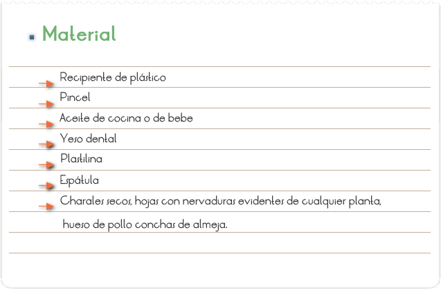
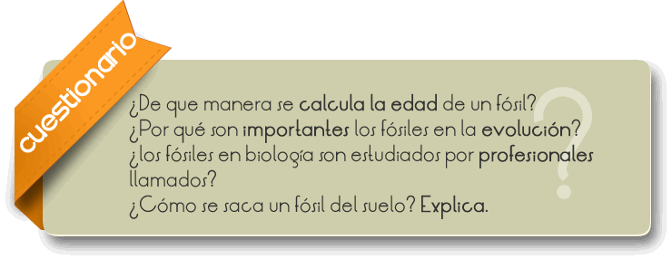

Los Fósiles son los restos o huellas de organismos, de un animal o vegetal incluidos en las capas terrestres y que haya vivido antes del comienzo de la época actual, llegando a nosotros.
Los paleontólogos consiguen la mayoría de la información mediante el estudio de los depósitos de rocas sedimentarias que forman estratos y que se han ido sucediendo durante millones de años. Además, la mayoría de los fósiles se encuentran en estas rocas sedimentarias.
Simular la formación de un fósil y reconocer la importancia de los fósiles en relación a la vida actual.

1. Ablandar la plastilina y construir un rectángulo de tal manera que quede grueso para poder colocar nuestro ejemplar.
2. Ya elaborado nuestro molde con ayuda del pincel colocar un poco de aceite sobre la plastilina para poder hacer la impresión.
3. Colocar en el centro del molde nuestra muestra a imprimir y presionar para que se marque.
4. Prepara el yeso, vierte poco a poco el agua hasta formar una mezcla uniforme, (cuida de no agregar tanta), hazlo en el recipiente de plástico.
5. Agrega la mezcla sobre el molde de plastilina y deja reposar hasta que seque (entre 10 y 15 minutos).
6. Retira la plastilina con mucho cuidado para obtener tu fósil.

Los Fósiles son los restos o huellas de organismos, de un animal o vegetal incluidos en las capas terrestres y que haya vivido antes del comienzo de la época actual, llegando a nosotros.
Los paleontólogos consiguen la mayoría de la información mediante el estudio de los depósitos de rocas sedimentarias que forman estratos y que se han ido sucediendo durante millones de años. Además, la mayoría de los fósiles se encuentran en estas rocas sedimentarias.
La fosilización consiste en la transformación del resto orgánico, tanto por acciones químicas como mecánicas. La condición esencial para que los restos de los animales y vegetales se conserven, es que no permanezcan largo tiempo a la intemperie pues, de lo contrario, se descomponen y desaparecen. Para que la conservación de restos orgánicos se realice con transformación mayor o menor de la sustancia que los constituye, es condición esencial que quede incluido entre sedimentos, libres de la acción de la descomposición. Para calcular su antigüedad se recurre a pruebas con sustancias llamadas elementos radioactivos, como el uranio y el carbono. Existen dos formas principales de saber la edad de un fósil: el sistema de carbono 14 y el sistema de radio.